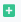

#
Connectors
Click on the Connectors menu under Components to create Connectors that are to be used in Process/Linear models.
Click on Add Record icon  on top right hand corner.
#
Common Fields
Click on Category dropdown
#
Start Event
If creating a connector that is to be used as the Start Event of the process, select Start Event
Click on Type dropdown
#
Cron
If the process's start event is to schedule a task for specified intervals then select Cron
Required fields are marked with *
#
Read Email
If the process's start event is to read the email then select Read Email. This type of connector is useful when your process contains the reading of emails from particular email accounts, fetching and extracting data, and then manipulating data for further tasks.
Required fields are marked with *
- Email Account: Select the email account to be used from which the mails are supposed to be read
- Email Fields To Read: Fields to be read from email. Available options are Subject, Sender, Received Date, Message Uid and Email Message
- Max Email Fetch Count: Provide the maximum count of emails to be fetched during a single process run
- Mark As Seen: Check this if want to mark emails as seen after reading
- Search Filter: You can add search filters to be used while reading emails from email accounts. Such as 'Read emails since 1st April 2022'. You can find available options with the syntax here
- Custom Filter: Add a custom filter javascript file if any
#
Read Gmail
If the process's start event is to read Gmail then select Read Gmail. This type of connector is useful when your process contains reading an email from a particular Gmail account, fetching and extracting data, and then manipulating data for further tasks.
Required fields are marked with *
- Service profile: Select a service profile to be used from which the mails are supposed to be read
- Email Fields To Read: Fields to be read from email. Available options are Subject, Sender, Received Date, Message Uid and Email Message
- Max Email Fetch Count: Provide the maximum count of emails to be fetched during a single process run
- Marker Label: Enter the label name from which you want to read emails
- Search Filter: You can add search filters to be used while reading emails from email accounts. Such as 'Read emails since 1st April 2022'. You can find available options with the syntax here
- Custom Filter: Add a custom filter javascript file if any
- Save Attachments: Check this box if we want to save the attachments
- Attachment Category: Select the type of attachment. Available options are Inbound, Inbound OCR, Outbound, User and Generated.
- Attachment Access Level: Select the access level. Available options are Public, Group and User.
- Custom Filter: You can also add a custom filter like a javascript file for filtering.
#
Read Folder
If the process's start event is to read content from a folder select Read Folder
Required fields are marked with *
- Folder: Provide the path of the folder
- File Type(extension): Provide the type of files to be considered
- Filter: Add a custom filter javascript file if any
#
Read File
If the process's start event is to read data from File then select Read File
Required fields are marked with *
- Data Source: Select Data source to read from a file
#
Ftp
If the process's start event is to read content from a folder available on the FTP server then select Ftp
Required fields are marked with *
- FTP Site: Select the FTP site from Records
- Max Number of Tries: Maximum number of times to try running the FTP command if the command is unsuccessful
- Try Intervals: Time interval between command retries in milliseconds
- Cutoff Time: Provide time in an hour and minutes after which the process will stop trying FTP commands
- Error On Incomplete Commands: Check this if want to generate error tasks if there are incomplete FTP commands
- FTP Commands: Here provide command types such as Get Once, Put Once, etc., provide command parameters if any, FTP folder from which we want to access content, File List.
#
Webhooks
If the process's start event is to read data from Webhooks then select Webhooks
Required fields are marked with *
Required fields are marked with *
- Name: Enter the name for webhooks
- Method: Select the HTTP method from the drop-down. Avaiable options are GET, POST, PUT, Delete, Patch, Options and Head
- URL: Enter the URL for webhooks
#
Custom Start
If the process's start event is to run custom Javascript at the start of the process then select Custom Start
Required fields are marked with *
- Start Script: Select a custom Javascript file for the start event
- Script Parameters: Add parameters required for the script, if any
#
OCR
If a connector we want to use to extract the text from an image or a scanned document then select OCR
#
Actionabl OCR
If the process wants to use OCR from the application then select Actionabl OCR.
Required fields are marked with *
- Extraction Types: Select the type of extraction you want such as Fields, Plain Text.
- OCR cluster: Select the OCR cluster from the clusters
#
Hyper Science
#
Vidado
#
ABBYY
#
RPA
If a connector we want to use to automate an application the select RPA
#
Actionabl RPA
If the process wants to use RPA from the application select Actionabl RPA.
Required fields are marked with *
- RPA Script: Select the js file which you want to use in RPA.
- Application Path: Give the path/URL of the application.
- Application User: Give the User Name for the application if required.
- Application Password: Give the password for the application if required.
- Browser Parameter: For type Web RPA give browser parameters if required.
- RPA parameters: Give the parameter needed for RPA as key-value pair.
#
UI Path
#
Automation Anywhere
#
Blue Prism
#
Machine Learning
When an event is focused on teaching computers to learn from data and to improve with experience then select Machine Learning
#
Actionabl ML
If the process uses Machine Learning then select Actionabl ML
#
App
If we want a connector to perform a certain task then select App
#
Send Email
If the process wants to send an email then select Send Email

Required fields are marked with *
- Email Account: Select the Email Account from which you want to send Emails.
- Email Template: Select an Email template in which you can define the subject, body, etc.
- Email Type: Select Email type as New, Reply and Forward.
- Read Email Task Id: For Email Type forward select task Id.
#
Send Gmail
If the process wants to send email from a Gmail account then select Send Gmail
Required fields are marked with *
- Service profile: Select a service profile to be used from which the mails are supposed to be sent
- Email Template: Select an Email template in which you can define the subject, body, etc.
- Email Type: Select Email type as New, Reply and Forward.
- Read Email Task Id: For Email Type forward select task Id.
#
Send Message
If the process wants to send a message to a mobile then select Send Message

Required fields are marked with *
- Message Template: Select a message template in which the message body, Mobile number, and message-id are present.
#
Read Folder
If the process's event is to read content from a folder select Read Folder

Required fields are marked with *
- Folder: Provide the path of the folder
- File Type(extension): Provide the type of files to be considered
- Filter: Add a custom filter javascript file if any
#
Read File
If the process's event is to read data from File then select Read File
Required fields are marked with *
- Data Source: Select Data source to read from a file
#
Generate document
If the process's event is to generate a document then select Generate document
Required fields are marked with *

- Document Type: Select the type of document. Available document types are PDF, Excel, CSV, HTML, and Word.
- Document Template: Select the template for your document.
- Template parameters: You can add fields for your template.
#
FTP
If the event is to read content from a folder available on the FTP server then select Ftp
Required fields are marked with *
- FTP Site: Select the FTP site from Records
- Max Number of Tries: Maximum number of times to try running the FTP command if the command is unsuccessful
- Try Intervals: Time interval between command retries in milliseconds
- Cutoff Time: Provide time in an hour and minutes after which the process will stop trying FTP commands
- Error On Incomplete Commands: Check this if want to generate error tasks if there are incomplete FTP commands
- FTP Commands: Here provide command types such as Get Once, Put Once, etc., provide command parameters if any, FTP folder from which we want to access content, File List.
#
Webhooks
If the event is to read data from Webhooks then select Webhooks
Required fields are marked with *
Required fields are marked with *
- Name: Enter the name for webhooks
- Method: Select the HTTP method from the drop-down. Avaiable options are GET, POST, PUT, Delete, Patch, Options and Head
- URL: Enter the URL for webhooks
#
Code
If the event is to add code in the process then select Code
Required fields are marked with *
Required fields are marked with *
- Code Script: Give the path of the js file you want to include.
- Code Parameters: Enter the parameters which you want to give the js file.
#
Bot
If we want to add the bot as a connector then select Bot
#
Bot
If the event wants to use Bot in the process then select Bot